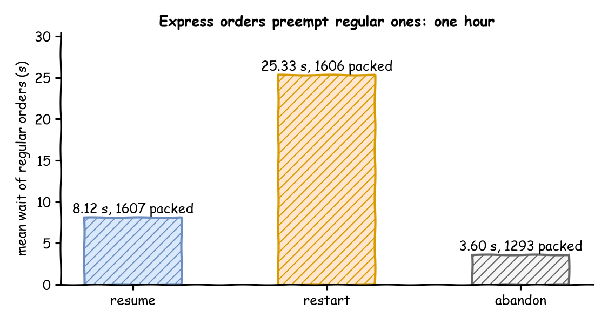

Interruptions
A quarter of the shop's orders are express, as in Priorities, but now an express order does not wait for the regular order being packed: it takes the packer at once. This page asks: what remains of a regular order's packing when an express order takes its packer, and which way of carrying on keeps regular orders waiting least?
- Decision: which of three policies a regular order follows when it loses the packer.
- Measures: the number of preemptions, the mean wait of regular orders, and the orders packed and lost.
- Runs: three runs of the hour, one for each policy, each with the seed 42.
- Assumptions: both kinds of order arrive at random, and every order takes the same time to pack.
What You Add
This page adds a packer that can be preempted, as Preemption explains, and an on_interrupt policy on regular orders: resume, restart or abandon. It also calls the packer away once, which interrupts the regular orders in the shop. A breakdown interrupts work in the same way, and the Model Breakdowns guide adds one. The shop is the one from Priorities: one packer and 1.5 seconds of packing. A regular order arrives every 2.22 seconds on average (rate: 0.45), and an express order every 6.67 seconds (rate: 0.15).
Preemption
Priority so far decided only who goes next. Preemption also stops the work in progress. In SimPy, a request may find every unit of a PreemptiveResource busy. A lower priority value is more urgent. When the request is more urgent than a process holding a unit, the resource takes the unit from the least urgent holder, the one with the highest priority value, and that process receives an Interrupt. In desflow it is preempt: true on a resource whose queue is priority. Save the files from Full Files in one folder and run the commands there:
| docs/snippets/tutorials/interruptions_low_level.py:packers | |
|---|---|
preempt=True gives the resource SimPy's preemption, and the process that holds a unit receives an interrupt when it is preempted. The code below uses three more SimPy names:
release(request)gives back the unit a request holds;env.active_processis the process that is running now;request.cancel()takes a request that has not been granted out of the queue.
Equal priorities do not preempt, so one express order does not take the packer from another.
Resume, Restart or Abandon
A preempted or interrupted task first gives back everything it holds and stops waiting for anything, as SimPy's with blocks do on the way out. Its on_interrupt then says what it does:
resume, the default: it queues again and, once it has the packer back, packs for the time it had left;restart: it queues again and packs for a new time, drawn from the same seeded stream, as if the work were spoiled;abandon: it ends, and its flow with it, unlesson_interrupt_nextnames a task to go to.
An order that is abandoned when it loses its packer, and goes to be packed by hand:
| docs/snippets/yaml/task_endings.yaml:interrupt-next | |
|---|---|
The task publishes preempted (or interrupted) when it loses the packer, and resumed when it has it again. A preempted record names the express order that took the packer (preempted_by, its entity key) and the time the regular order had held it (usage_since):
| docs/snippets/yaml/interruptions.yaml:policy | |
|---|---|
${POLICY:-resume} reads the environment variable POLICY, so POLICY=restart desflow run interruptions.yaml runs the second policy.
The process catches simpy.Interrupt. For a preemption, its cause is SimPy's Preempted. The process gives back its request and requests the packer again. on_interrupt writes that loop for you. SimPy delivers an interrupt as an URGENT event, which End Conditions explains.
The statistics count each preempted, interrupted and resumed. A resumed order's wait is the sum of its waits, and its packing time is the total time it was packed:
Interrupt a Task
Preemption is one source of interrupts, and a model can send others. An interrupt names a task. Every instance of that task that is running, waiting or being served receives an interrupt with the given cause, and follows its on_interrupt. A where condition, such as attr.order == 3, limits the interrupt to the instances for which the condition holds. Here the packer is called away at 31 minutes:
| docs/snippets/yaml/interruptions.yaml:interrupt | |
|---|---|
A task can carry the same interrupt, applied when it finishes.
| docs/snippets/tutorials/interruptions.py:interrupt | |
|---|---|
context.interrupt(task, where=None, cause=None) returns how many instances it reached. It never reaches the instance that calls it.
| docs/snippets/tutorials/interruptions_low_level.py:interrupt | |
|---|---|
process.interrupt(cause) is SimPy's. The model keeps its own list of the processes it may interrupt.
Result
What remains of a regular order's packing when an express order takes its packer? Each figure here comes from one run of the hour with the seed 42.
- With
resume, the time it had left remains. After 344 preemptions, regular orders wait 8.12 seconds on average. - With
restart, nothing remains: each preempted order packs again from the start. Preemptions rise to 393, and the mean wait triples to 25.33 seconds. - With
abandon, the order is lost. 314 orders are lost, 312 to preemption and 2 to the call at 31 minutes. The 1,293 packed orders wait only 3.60 seconds on average, because every interrupted order leaves the queue.
The call at 31 minutes reaches every regular order in the shop at that moment: 3 under resume, 23 under restart, whose longer queue holds more orders, and 2 under abandon:

The Builder and Low-level scripts print all three:
Why It Works
Under restart the packer spends part of its time on packing that is thrown away, so it does more work for the same orders. The mean time packed rises from 1.50 to 1.69 seconds, and the load nears what one packer can do. Waits then grow fast, as Queueing Basics explains. resume loses no work, so its waits are close to those of plain priority. abandon looks best only because the mean leaves out the orders it lost. So report their count beside it. Priority and Preemption describes preemption, and Tasks and Processes the task's steps.
Full Files
Full files
| docs/snippets/tutorials/interruptions_low_level.py | |
|---|---|
1 2 3 4 5 6 7 8 9 10 11 12 13 14 15 16 17 18 19 20 21 22 23 24 25 26 27 28 29 30 31 32 33 34 35 36 37 38 39 40 41 42 43 44 45 46 47 48 49 50 51 52 53 54 55 56 57 58 59 60 61 62 63 64 65 66 67 68 69 70 71 72 73 74 75 76 77 78 79 80 81 82 83 84 85 86 87 88 89 90 91 92 93 94 95 96 97 98 99 100 101 102 103 104 105 106 107 108 109 110 111 112 113 114 115 116 117 118 119 120 121 122 123 124 125 126 127 128 129 130 131 132 133 134 135 136 137 138 139 140 141 142 143 144 145 146 147 148 149 150 151 152 153 154 155 156 157 158 159 160 161 162 163 164 165 166 167 168 | |